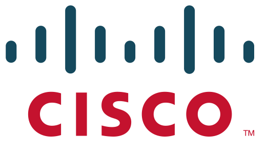
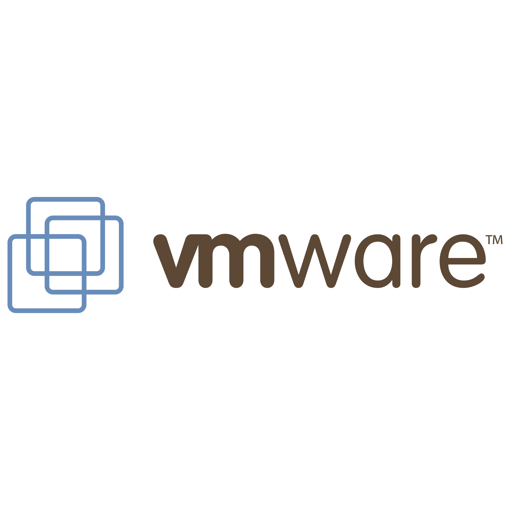

Skill


STE AUTOMATION BOOTCAMP
[May 24] - [Ongoing]
CISCO NETWORK ACADEMY
[Jul 22] - [Sep 22]
Hello! I am [Muhamad Ramdhan Syaadillah], a passionate [Tech Enthusiast]
With my bachelor's degree and work experience in companies in the IT and Telecommunications Industry, I have passion, Staying up-to-date with the latest development, and willing to life-long learning about trends in the field of technology.
I am excited to find innovative solutions that address the complex challenges facing the IT / Telecommunications Industry nowadays. This keeps me motivated to looking for opportunities to expand my knowledge and skills. I have a strong foundation and background in the basics fundamental of telecommunications engineering.
Politeknik Elektronika Negeri Surabaya
(2018 - 2022)
IPK: 3.53
Judul Tugas Akhir: "Sistem Keamanan Pertukaran Informasi pada v2v (vehicle-to-vehicle) dengan Hybrid Algorithm"
Position: Construction Network Project Design
Jan 21 - Apr 21
Position: Network Design Specialist
Mar 23 - Mar 24
[May 24] - [Ongoing]
[Jul 22] - [Sep 22]